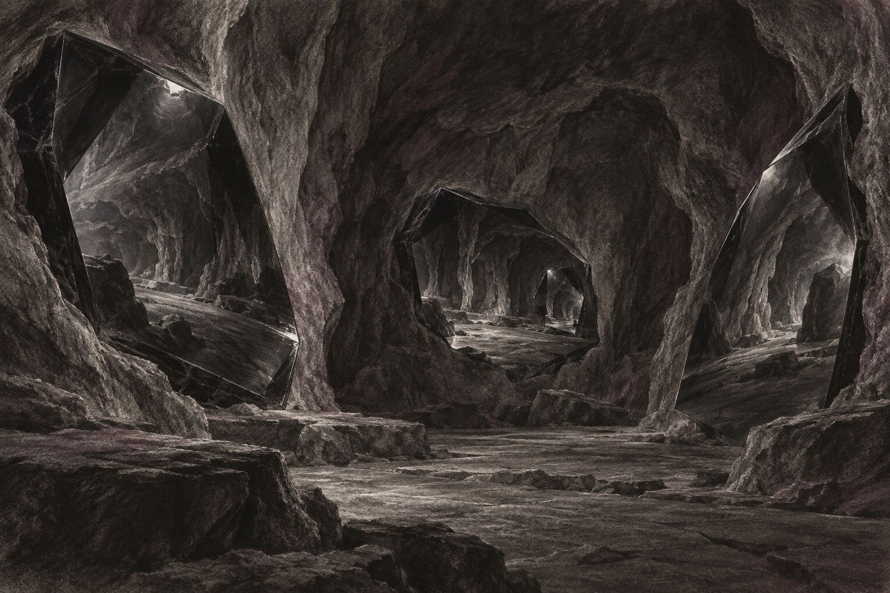

Part IX
Epilogue 3: The Cave of the Dragon
Estimated reading time: 10 min
Plato imagined prisoners chained inside a cave, mistaking shadows on the wall for the whole of reality. Freedom, in that allegory, means breaking the chains and stepping into the sun. The Dragon’s Path reorients that metaphor. Here, the cave is the inescapable internal architecture of consciousness—the interplay of nervous system, psyche, and perception through which reality becomes available to us.
Wisdom, therefore, is a courageous exploration deeper within the cave. Freedom emerges when we understand the origin of each reflection rather than reject it.
This inner world becomes the Dragon’s hall of mirrors, where perception can show the lens that shapes it.
Even the weight of the body in the seat, even the quality of light reaching the eyes, is already happening inside the cave.

Plato’s Cave and the Dragon’s Cave
The Dragon’s Cave keeps Plato’s hunger for truth, but turns the movement inward: the cave is the medium of perception, where nervous system, emotion, cognition, and psyche build the world we can meet. Perception actively models. Relationship tests the model against another person. Shadow moves through familiar directions: projection, introjection, and extrojection, where inner weather becomes the room’s climate.
Even a simple phrase like “We need to talk” can light up the cave. The screen glows late. The stomach drops before you have facts: data, not verdict. An introject supplies a familiar tone of condemnation. Projection paints the other as unsafe. Extrojection turns an inner script into “the terrain” and starts drafting the room into it. A long exhale restores choice: ask for context, name needs, and respond from the present instead of the old story.
The Prism of Impact names the irreducible boundary and whole relational encounter between one person’s intention and another’s reception. Intent is the sender’s aim or account. The Beam is the observable conduct that crosses the boundary. Impact is what lands. Refraction is the interpretation and attribution that inevitably shape reception; distortion is an ordinary fact of live contact, even in good faith. The encounter also includes the sender’s power, the receiver’s history and nervous-system state, the injury present, and the shared relational context. No one element explains the outcome or apportions blame by itself. The cave is where this whole field is perceived.
Intent as a Shield against accountability is the primary move of the Architecture of Avoidance: insisting on “what I meant” to invalidate “what happened.” When someone names harm, a signal arrives from the edge of the cave. It calls for slowing down, learning what Beam was actually sent, and deciding what truth, restraint, or repair the contact requires.
Radical responsibility is staying in the cave long enough to learn what you are projecting, what you have introjected, and what signal you are actually transmitting.
Shadows and reflections are not external falsehoods. They constitute the very substance of subjective experience, including the parts of your nature you least want to claim: the selfish, jealous, or resentful impulses your identity is designed to hide.
From inside this cave, the Dragon learns three disciplines:
Comprehension over escape. Insight arises from noticing the mirrors—perceptual frameworks, relational dynamics, absorbed beliefs, and emotional triggers—and understanding how they shape perceived reality.
One landscape of light, shadow, and mirrors. Each reflection, whether welcome or unwelcome, offers usable information about conditioning, potential, and relationship. It all arises inside the cave.
Attention at the edges of perception. The inner world is a dynamic field shaped by nervous system, psyche, and incoming sensation. The “walls” of the cave mark the current boundaries of perception and self-awareness: edges that can be noticed, tested, and widened from within.
The Brain as Architect
Contemporary neuroscience gives this cave metaphor a concrete footing. Our lived experience is not direct, unfiltered contact with an “external” world; it is an active model constructed by brain and nervous system.
In predictive processing accounts, perception is the nervous system’s best guess—continuously revised by sensory input into a usable world-and-body story. This does not make reality arbitrary or private; subjectivity remains constrained by gravity, biology, consequence, and other caves—other nervous systems.
The nervous system is the Dragon’s circuitry: the threshold where sensation becomes meaning and reflex becomes choice. Our sensory organs receive photons, sound waves, pressure, and chemical signals, and the nervous system turns that flood into the room you think you are simply seeing. The body feels the cost when the predictive model goes wrong: a harmless tone lands like danger, a verdict outruns the room, and the nervous system prepares for what is no longer actually here.
The Hard Problem of Consciousness
How intricate neural patterns give rise to subjective awareness—the raw feeling of “what it’s like” to be—remains the profound enigma often called the hard problem of consciousness. This is the Dragon’s ultimate riddle within the cave.
This mystery is not solved in a book; it is entered through the Form Body. It is the shock of cold water on the skin, the heat of shame in the face, the weight of gravity in the pelvis, the ache of longing in the chest. The hard problem remains a puzzle; the felt doorway is the sensation of being alive.
The Dragon’s Path does not dissolve the hard problem. It deepens it by refusing two easy exits: calling consciousness an illusion, or declaring a metaphysics that closes inquiry. Whether you think mind emerges from matter or matter appears within mind, the lived fact remains: you are inside experience, and you cannot step outside the lens.
The Strange Loop names something different. It does not explain why experience exists at all. It describes how awareness can fold back on itself within experience—how the observer becomes part of what is observed through recursive self-reference. That helps with the shape of selfhood: why consciousness can feel layered, reflexive, and able to witness its own processes. It does not solve the harder mystery that there is something it is like to be here in the first place.
The Möbius Manifold belongs here as a useful image for the recursive structure of self-awareness rather than an answer: inside becomes outside, observer becomes observed, all on a single continuous surface. With each fold, observer and observed trade places. The image does not solve consciousness; it shows how the lens can become part of what it sees.
Mystery does not remove method. Neural language gives us ways to investigate how experience takes shape. Ontology remains provisional. Sensation, other minds, and consequence keep the lens honest.
The Nervous System as a Hall of Internal Mirrors
The nervous system is a hall of internal mirrors, constantly reflecting, filtering, predicting, and interpreting incoming sensation and bodily state into perceived reality.
Thought, emotion, and ego all arise inside this layered reflection—the cave built and rebuilt moment by moment through neurological light and shadow.
The ego—our constructed sense of a coherent self—acts as one curator within the cave, lifting some reflections into focus, dimming others, and calling the resulting pattern “me.”
When that curator is frightened, the whole chamber tilts toward threat, and other people start arriving already translated.
The Relationship as Mirror
Within the relational dimension of the cave, every encounter becomes a mirror revealing how our nervous system filters connection and meaning.
This raises an immediate question: if everything is “inside the cave,” what makes the other real? Here the metaphor deepens: you have a cave, and they have a cave. This is intersubjective correction—relationship is where two best-fit models meet, press on each other, and update.
You feel this when your story is wrong. A short reply lands as contempt; your chest tightens; your mind writes the verdict. Then you check: “I’m telling myself you’re angry—are you?” They answer: “I’m not angry. I’m scared.” Your cave updates. Imagination tends to obey you; encounter surprises you.
Other people are not props inside your cave; they are other caves—other nervous systems with their own constraints, histories, and choices. Stories meet resistance there, and contact shows whether your reading can survive another mind. In that meeting, signal matters: what you send, what they receive, and how quickly you can correct distortion.
Projection casts unclaimed material onto another. Being projected upon makes you a screen for someone else’s history, though their cave does not erase your Beam. Introjection lets family, culture, or community speak from inside your own chest. Sometimes an introject begins as another person’s projected script crossing your threshold: a judgement, role, fear, or demand installed as an inner voice. Extrojection moves in the opposite direction: it treats your inner script as the room’s truth, placing your ideas or worldview onto others until they feel pressure to play roles they did not choose.
The sign is simple: a private emergency starts arranging the field before anyone has agreed to carry it. Plans keep changing, corrections come fast, and the room begins bracing around them. When a real power differential enters, extrojection can become coercive if authority is used to make the room obey an inner script it did not choose. The Dragon’s work is to catch that script before relationship is forced to perform it.
In tense conversation, the cave becomes more honest when one question can still be heard: is this projection, introjection, or extrojection? Even naming the possibility is already a step back from the mirror.
Archetypes and Polarities
Deeper within the cave, foundational mirrors appear as recurring archetypal currents such as Sage, Lover, and Warrior, the Shadow domain, and core polarities such as Structure and Flow, creation and destruction, light and shadow. These mirrors reflect dynamics that can shape psyche and perceived cosmos without becoming fixed identities.
Archetypes as Inner Reflections
Working consciously with archetypes reveals how recurring human currents move through attention, speech, posture, and choice. The Magician gathers attention, naming, and will; the Inner Child reveals where needs for safety, play, and connection still tint the light.
By engaging these mirrors deliberately, we move from unconscious enactment to embodied wisdom and expression.
Left unseen, these currents enter conversation before you do.
Polarities as Internal Spectra
Fundamental polarities—light and shadow, spirit and matter, chaos and order—are not mutually exclusive opposites demanding allegiance. They are complementary ends of living spectra. The Dragon learns to embrace the whole continuum, where wholeness arises from navigating dynamic tension.
Exploring polarities reveals the balance required for integration. The familiar Axis of Being appears here inside perception rather than as a new map. Its vertical line holds inner coherence, from Form Body to Void Body; its horizontal line holds relationship, work, impact, and love. They cross at the Serene Center.
The integrated Dragon rests at that crossing. It can feel spacious receptivity, finite body, projection, encounter, polarity, and consequence without collapsing any of them. To feel the crossing, let attention drop through the body, then soften outward toward the person in front of you; the Serene Center is where both signals can be held at once.
Infinite Dimensions of Awareness Within the Cave
Centered in this cave, you begin to hold several truths at once: the world arrives through a best-fit model, other people remain irreducibly other caves, and consciousness itself refuses final explanation.
Observer and participant start to trade places. Each reflection carries more than one scale.
When certainty hardens into a verdict, the honest question is simple: Is this the world, or is this the shape of my own lens?
We are living inside a best-fit model, corrected by sensation, relationship, and consequence.
A consciousness wearing biology, carrying the afterglow of the Big Bang and the ash of exploded stars, briefly awake on a temporary planet in a violent and beautiful universe.
The question now is how you steer from within the cave.
Because every signal crosses an irreducible encounter, every Beam crosses the Prism, lands as Impact, and meets Refraction. Clarity of signal is not just a communication skill. It is an ethical act: the only way we touch across the space between our caves.
So take this vow at the mouth of the cave:
Because I cannot leave my cave, and you cannot leave yours, the only way we touch is through the signals we send. Make your signal true.
Sensation, the other’s reality, and consequence are what correct the lens when it distorts. The cave cannot be escaped; it can only be made honest by refusing to use your own nature as a blind spot.